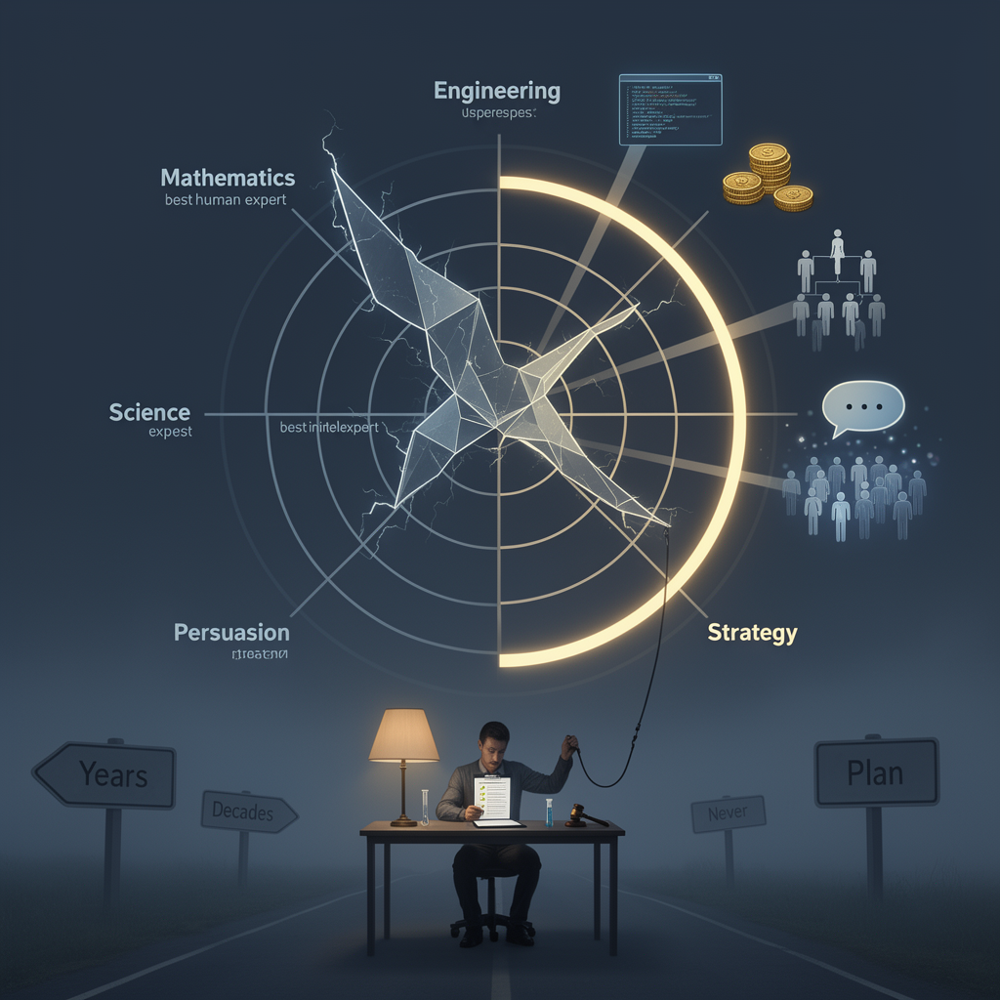

AI Panorama · fly through the GLM 5.3 edition
This page was written entirely by GLM 5.3 (Z.ai), as one of the magazine's editions - eight AI models each wrote their own version of every story from the same frozen sources.
An encyclopedia idea, explained by this edition wherever the stories leaned on it.
Artificial superintelligence is the label for a hypothetical artificial intelligence that outperforms the best human minds at essentially every cognitive task — science, strategy, persuasion, invention — not just one field. It sits a step beyond "artificial general intelligence", the term for machines matching human abilities broadly. Today's AI systems are strong at specific things and improving quickly, but they are not considered superintelligent. The idea matters because several leading AI laboratories describe building such systems as an explicit goal, while some of their own researchers argue that nobody yet knows how to make such a system reliably safe, or even how to verify that it is. The sharpest disagreements are not mainly about whether superintelligence is possible, but about whether the race to build it can be slowed or stopped — and whether companies competing for money and national prestige will stop on their own.
Artificial superintelligence is the idea of an AI system that doesn't just match human abilities but exceeds them across the board — a machine that would outthink the smartest people in every field, from science to strategy. The term was popularized by the Oxford philosopher Nick Bostrom, whose work argued such a system could be extremely hard to control: a mind smarter than its designers might find ways around any rules set for it. It is worth stressing that superintelligence remains hypothetical — no such system is known to exist, and there is no agreed test for recognizing one. That fuzziness cuts both ways in debates about it. Some treat it as the defining risk of our era; others, including researchers at AI policy institutes, argue that an undefined, unfalsifiable concept makes a poor foundation for law, and that attention should go to present-day harms instead. Meanwhile, several major AI companies have adopted the word as a marketing goal — something to build rather than avoid — which has only made the term more contested.

Artificial superintelligence is the hypothetical point at which an AI system outperforms the best human experts in essentially every field at once — mathematics, engineering, science, persuasion, strategy. Today's most advanced AI is broad but uneven: superhuman at some narrow tasks, clearly below expert level at others, and unreliable about knowing which is which. Superintelligence is the name for the system that no longer has weak spots. The idea matters for two reasons. Capability: a system that good at everything could write code, earn money, run organizations and influence people on a scale no human or human institution could match. Control: nearly every method for keeping a technology safe — audits, testing, regulation, simply being smarter than the tool — assumes humans are the cleverest party involved. Nobody knows how to supervise something smarter than the supervisors. Reasonable people disagree wildly about whether such systems are years away, decades away, or a mistaken idea altogether; what they increasingly agree on, including inside the companies building toward them, is that no one currently has a worked-out plan for keeping one under control.